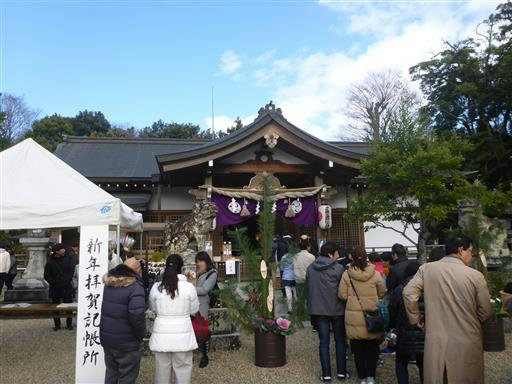
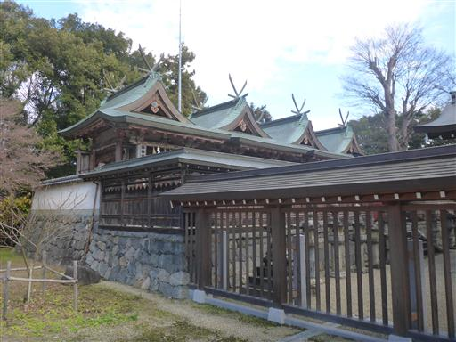
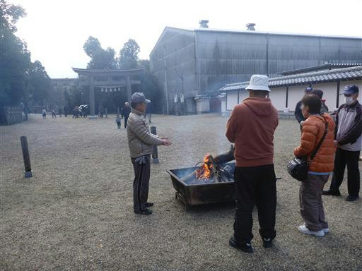
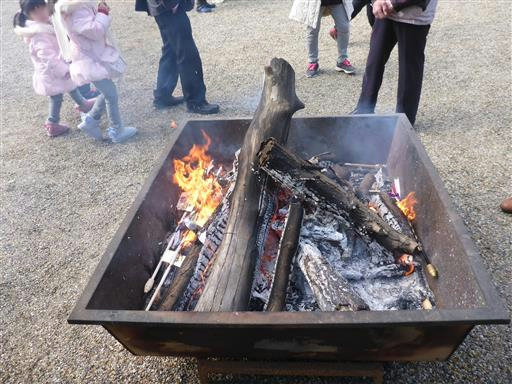
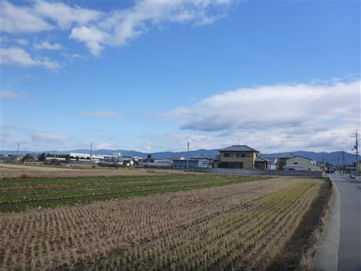
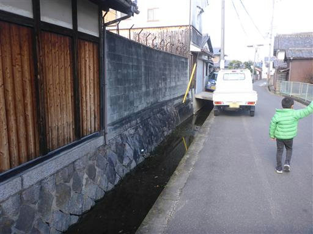

多神社
| 日付 | 2020年1月1日（水） |
|---|---|
| メンバー | 家族（妻、長女・8歳、長男・6歳） |
| アクセス | 徒歩 |
朝からお節を食べた後、いとこがやって来るまで暇なので
散歩ついでに多神社にお参りすることにする。
家から30分程度の場所にある小振りの神社だ。
道草を食いながら散歩をし、多神社に到着する。

奥にある建物。そこそこ立派な神社だ。

古い御守りなどが燃やされている。11年前と変わらない風景。

火の側は非常に暖かい。冷え切った体を温める。

帰り道。今日はきれいに晴れ渡っている。

道端のどぶ。奈良の道はとにかくどぶが多い。
子供達に「のび太がいつもはまっているところ」と教えてあげる。
散歩ついでの参拝で良い暇つぶしになった。
来年も晴れていれば、正月は山に行ってみるのも良いかもしれない。

他の記録